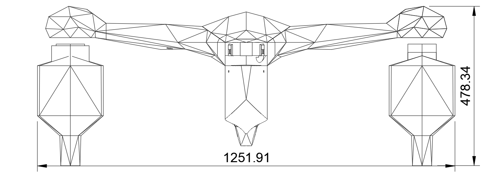
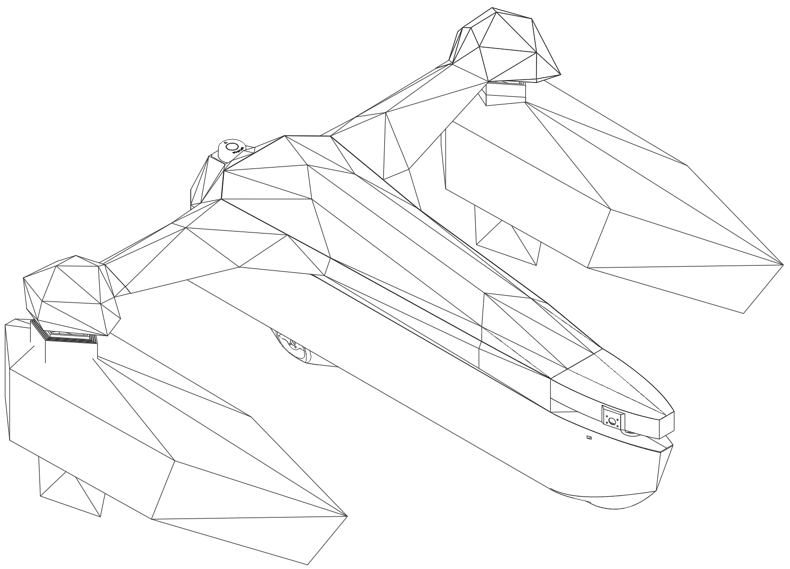
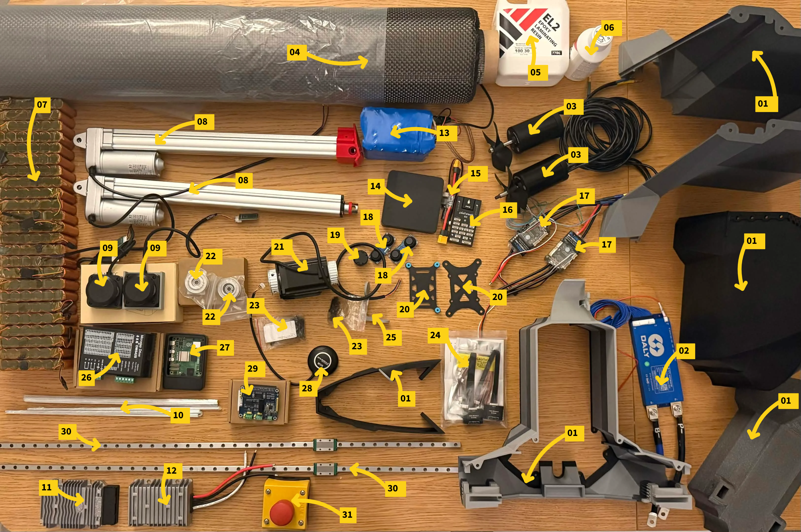
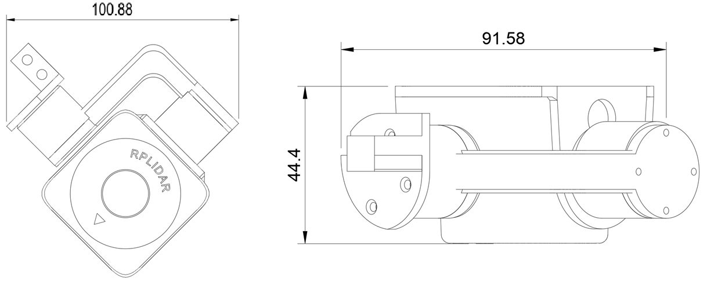
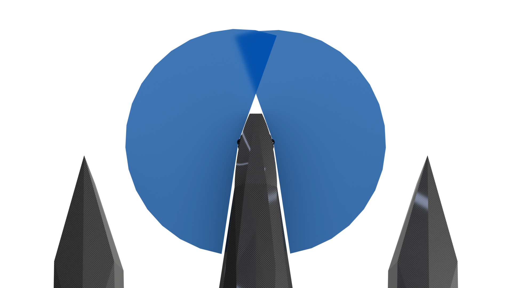
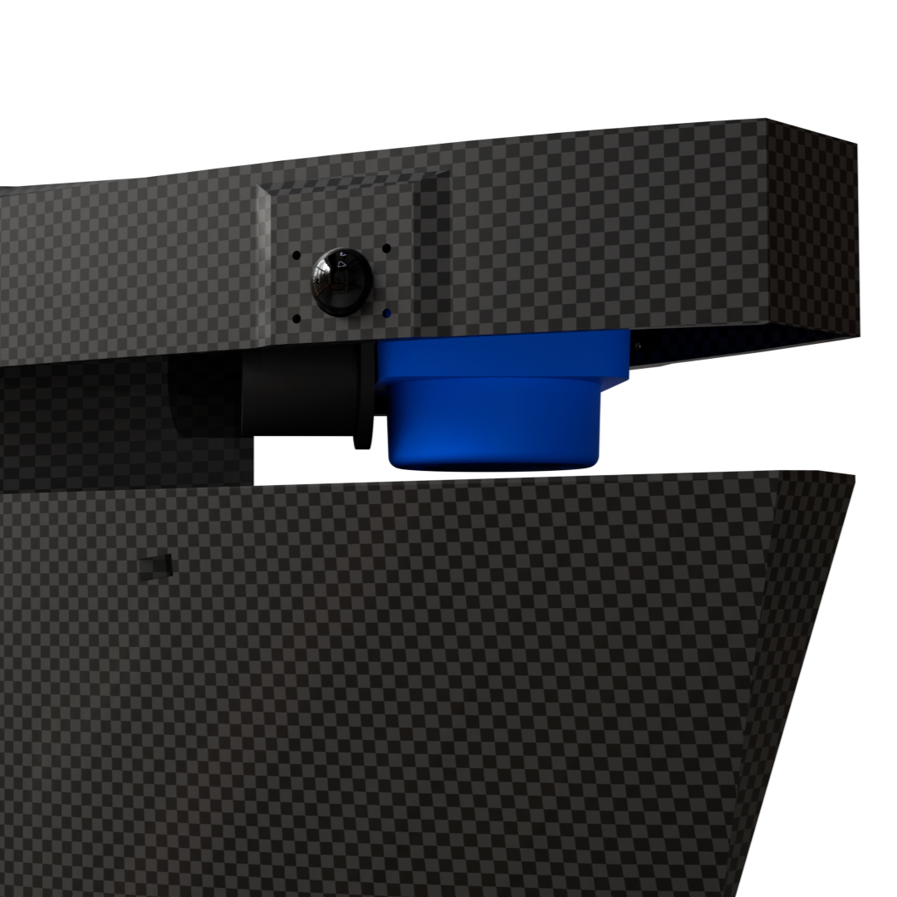
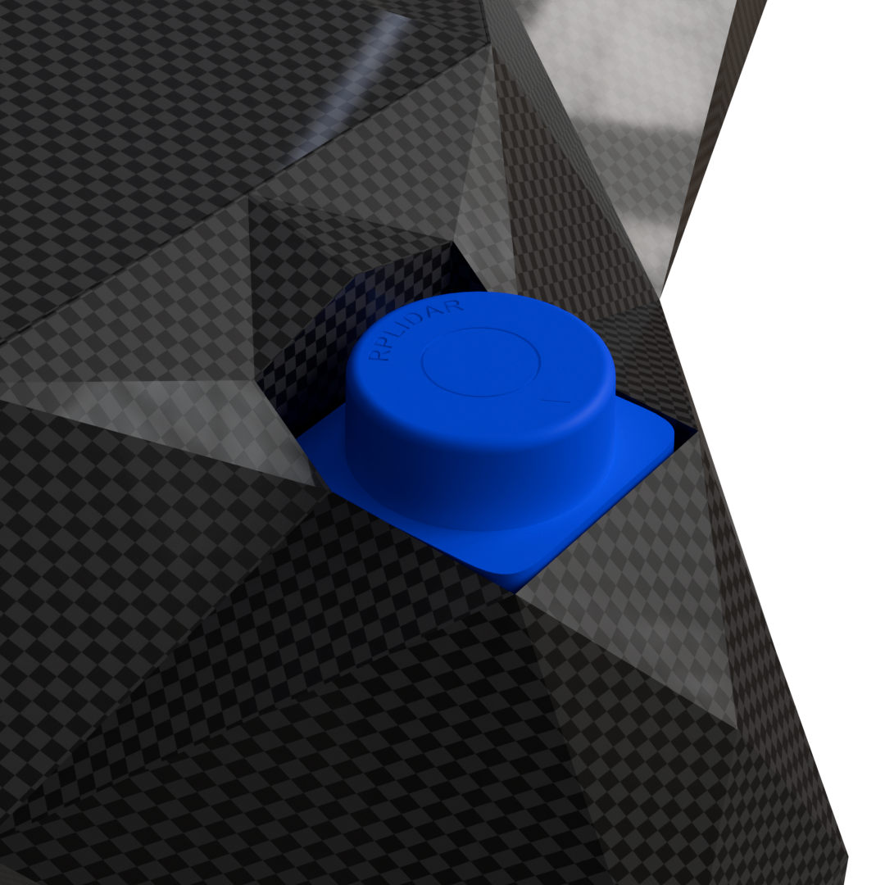
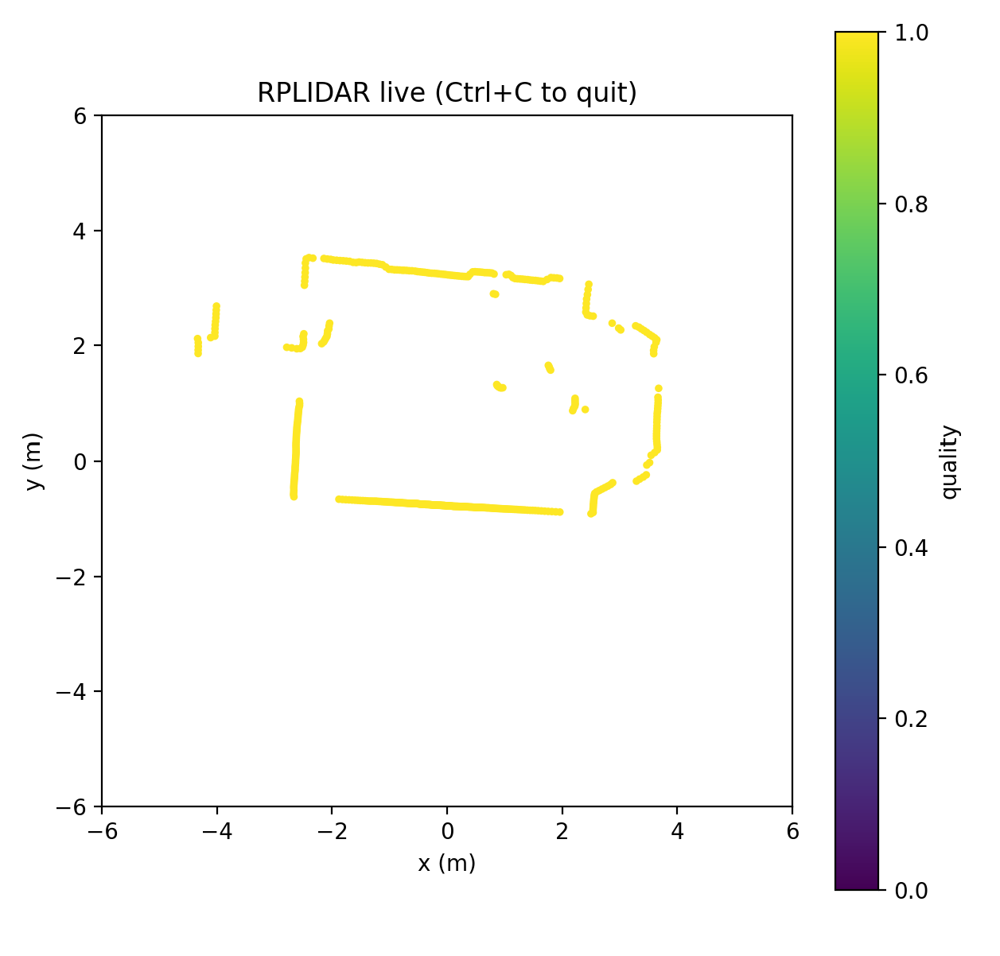

Ligmax, en autonom båt
En båt designet fra bunnen av. Skrog, elektronikk, persepsjon og programvare. Målet er en plattform med autonom kapasitet og full situasjonsforståelse: to gimbalmonterte kameraer, lidar, integrert batteripakke og bøyedeteksjon om bord. Bygges gjennom hele 2026.
Det som er om bord
- Skrog: Designet og modellert fra bunnen av, med hver komponent plassert før fabrikasjon.
- Persepsjon: Lidar pluss to kameraer på uavhengige gimbaler. En CNN for bøyedeteksjon kjører om bord som navigasjonsreferanse.
- Strøm: Spesialbygget batteripakke med aktiv massebalansering, plassert for å holde tyngdepunktet lavt og gjøre trimmingen kontrollerbar.
- Datakraft: SBC om bord håndterer persepsjon, styring og telemetri-uplink.
Designbilder

















Status
Mekanisk design er låst. Elektronikken er testet på benken og integreres nå. Persepsjonsmodellene trenes mot et eget bøyedatasett. Sjøprøver er planlagt senere i år. Denne siden vokser med prosjektet, så stikk innom igjen.
Designdokument
Fullt designdokument (CAD-oversikt, sensoroppsett, elektrisk, styring):